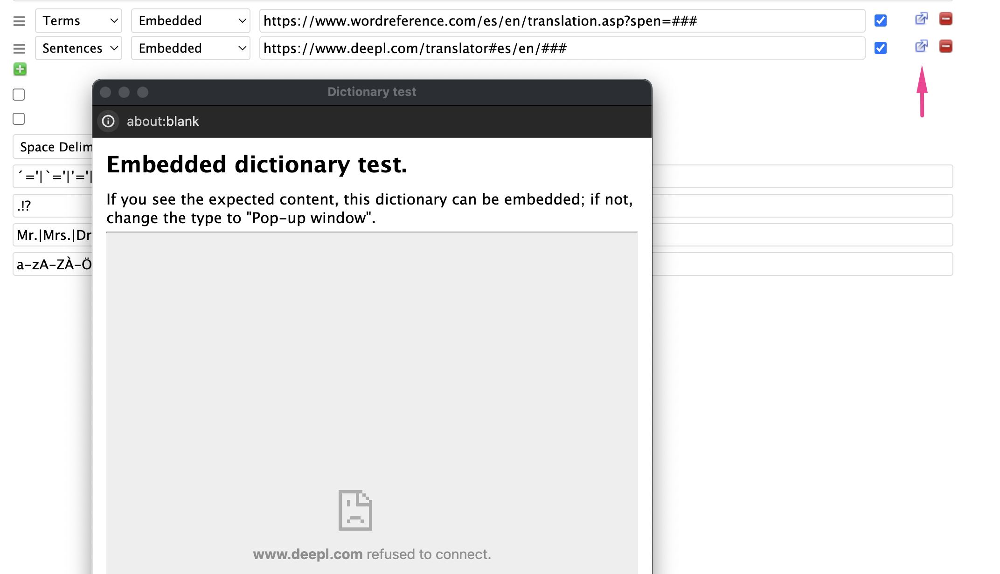

Dictionaries
You can add multiple dictionaries for Term and Sentence lookups as part of your Language definition.

Term dictionaries are shown as tabs in the term form.
Sentence dictionaries are used during sentence translation, when you hover over a term and hit the t hotkey. If you have multiple Sentence dictionaries, you can cycle through them by repeatedly hitting t (or Shift + t for the paragraph).
Embedded or Popup
Dictionaries can either be configured to be "Embedded" or "Pop-up".
Some sites, like DeepL and Google Translate, don't work when embedded within sites. These sites have to be viewed in separate pop-up windows, outside of Lute itself.
You can test a dictionary by clicking the small "out arrow" icon next to the dictionary. For example, here I've tried to set DeepL.com as an embedded dictionary, which they don't allow:
The dictionary URL
The dictionary link entry on the form can contain [LUTE] (or ###, though the former is preferred). Lute substitutes that with the actual term you're looking up.
Some dictionaries don't take parameters at all, so the placeholder is optional. For example, https://www.cherokeedictionary.net/### gives an error. In these cases, don't use a parameter, e.g. https://www.cherokeedictionary.net.
Sample dictionaries
Below are the dictionaries for the languages that come pre-configured with Lute:
| Language | For | Type | URL |
|---|---|---|---|
| Afrikaans | sentences | popup | https://translate.google.com/?hl=en&sl=af&tl=en&text=[LUTE]&op=translate |
| Afrikaans | terms | embedded | https://af.wiktionary.org/wiki/[LUTE]#Afrikaans_(af) |
| Afrikaans | terms | embedded | https://en.wiktionary.org/wiki/[LUTE]#Afrikaans |
| Afrikaans | terms | embedded | https://www.verbix.com/webverbix/go.php?&D1=67&T1=[LUTE] |
| Afrikaans | terms | popup | https://en.glosbe.com/af/en/[LUTE] |
| Ainu | sentences | embedded | https://tatoeba.org/en/sentences/search?from=ain&query=[LUTE]&to=eng |
| Ainu | terms | embedded | https://en.wiktionary.org/wiki/[LUTE]#Ainu |
| Ainu | terms | popup | https://ainu.ninjal.ac.jp/topic/dictionary/en |
| Ainu | terms | popup | https://ainugo.nam.go.jp/search/word?word=[LUTE]&typeDict=on&person=&matCd=&minLineCd=&maxLineCd= |
| Ainu | terms | popup | https://tatoeba.org/en/sentences/search?from=ain&query=[LUTE]&to=eng |
| Albanian | sentences | popup | https://translate.google.com/?sl=sq&tl=en&text=[LUTE]&op=translate |
| Albanian | terms | embedded | https://en.wiktionary.org/wiki/[LUTE]#Albanian |
| Albanian | terms | embedded | https://sq.wiktionary.org/wiki/[LUTE] |
| Albanian | terms | embedded | https://www.verbix.com/webverbix/go.php?&D1=103&T1=[LUTE] |
| Albanian | terms | popup | https://en.glosbe.com/sq/en/[LUTE] |
| Amharic | sentences | popup | https://translate.google.com/?sl=am&tl=en&text=[LUTE]&op=translate |
| Amharic | terms | embedded | http://www.amharicdictionary.com/Home/Index/[LUTE] |
| Amharic | terms | embedded | https://www.amharicpro.com/index.php?dr=101&searchkey=[LUTE] |
| Amharic | terms | embedded | https://www.verbix.com/webverbix/go.php?&D1=252&T1=[LUTE] |
| Amharic | terms | popup | https://dictionary.abyssinica.com/[LUTE] |
| Arabic | sentences | popup | https://translate.google.com/?hl=en&sl=ar&tl=en&text=[LUTE] |
| Arabic | sentences | popup | https://www.deepl.com/translator#ar/en/[LUTE] |
| Arabic | terms | embedded | https://context.reverso.net/translation/arabic-english/[LUTE] |
| Arabic | terms | embedded | https://en.wiktionary.org/w/index.php?search=[LUTE]#Arabic |
| Arabic | terms | embedded | https://www.arabicstudentsdictionary.com/search?q=[LUTE] |
| Arabic | terms | popup | https://translate.google.com/?hl=en&sl=ar&tl=en&text=[LUTE]&op=translate |
| Arabic | terms | popup | https://www.deepl.com/translator#ar/en/[LUTE] |
| Arabic | terms | popup | https://www.livingarabic.com/en/search?q=[LUTE]&dc[]=1&dc[]=8&dc[]=3&dc[]=2&dc[]=4&dc[]=6&dc[]=5&dc[]=10&dc[]=9&st[]=0&st[]=1&st[]=2 |
| Armenian | sentences | popup | https://translate.google.com/?sl=hy&tl=en&text=[LUTE]&op=translate |
| Armenian | terms | embedded | http://www.nayiri.com/search?dt=HY_HY&r=0&l=en&query=[LUTE] |
| Armenian | terms | embedded | http://www.nayiri.com/search?l=en&dt=HY_EN&r=0&query=[LUTE] |
| Armenian | terms | embedded | https://calfa.fr/search?query=[LUTE] |
| Armenian | terms | embedded | https://en.wiktionary.org/wiki/[LUTE]#Armenian |
| Armenian | terms | embedded | https://www.verbix.com/webverbix/go.php?&D1=135&T1=[LUTE] |
| Azerbaijani | sentences | embedded | https://www.bing.com/translator/?from=hy&to=en&text=[LUTE] |
| Azerbaijani | sentences | popup | https://translate.google.com/?sl=gd&tl=en&text=[LUTE]&op=translate |
| Azerbaijani | sentences | popup | https://translate.yandex.com/?source_lang=az&target_lang=en&text=[LUTE] |
| Azerbaijani | sentences | popup | https://www.online-translator.com/translation/azerbaijani-english?text=[LUTE] |
| Azerbaijani | terms | embedded | https://az.wiktionary.org/wiki/[LUTE] |
| Azerbaijani | terms | embedded | https://cooljugator.com/az/[LUTE] |
| Azerbaijani | terms | embedded | https://en.wiktionary.org/wiki/[LUTE]#Azerbaijani |
| Azerbaijani | terms | embedded | https://www.verbix.com/webverbix/go.php?&D1=250&T1=[LUTE] |
| Azerbaijani | terms | popup | https://tatoeba.org/en/sentences/search?from=aze&query=[LUTE]&to= |
| Basque | sentences | popup | https://translate.google.com/?sl=eu&tl=en&text=[LUTE]&op=translate |
| Basque | terms | embedded | https://hiztegiak.elhuyar.eus/eu_en/[LUTE] |
| Basque | terms | embedded | https://www.euskaltzaindia.eus/index.php?option=com_bilatzaileaweb&task=indizeaKontsultatu&view=emaitzaazaldu&query=[LUTE] |
| Basque | terms | embedded | https://www.verbix.com/webverbix/basque/[LUTE] |
| Basque | terms | popup | https://en.glosbe.com/eu/en/[LUTE] |
| Belarusian | sentences | popup | https://translate.google.com/?sl=be&tl=en&text=[LUTE]&op=translate |
| Belarusian | sentences | popup | https://translate.yandex.com/?source_lang=be&target_lang=en&text=[LUTE] |
| Belarusian | terms | embedded | https://be.wiktionary.org/wiki/[LUTE] |
| Belarusian | terms | embedded | https://en.wiktionary.org/wiki/[LUTE]#Belarusian |
| Belarusian | terms | embedded | https://www.verbix.com/webverbix/go.php?&D1=248&T1=[LUTE] |
| Belarusian | terms | popup | https://en.glosbe.com/be/en/[LUTE] |
| Belarusian | terms | popup | https://tatoeba.org/en/sentences/search?from=bel&query=[LUTE]&to= |
| Bengali | sentences | popup | https://translate.google.com/?sl=bn&tl=en&text=[LUTE]&op=translate |
| Bengali | terms | embedded | https://bn.wiktionary.org/wiki/[LUTE]#%E0%A6%AC%E0%A6%BE%E0%A6%82%E0%A6%B2%E0%A6%BE |
| Bengali | terms | embedded | https://dsal.uchicago.edu/cgi-bin/app/bengali_query.py?qs=[LUTE]&searchhws=yes&matchtype=default |
| Bengali | terms | embedded | https://en.wiktionary.org/wiki/[LUTE]#Bengali |
| Bengali | terms | embedded | https://www.shabdkosh.com/dictionary/english-bengali/[LUTE] |
| Bosnian | sentences | popup | https://translate.google.com/?sl=bs&tl=en&text=[LUTE]&op=translate |
| Bosnian | terms | embedded | https://bs.wiktionary.org/wiki/[LUTE] |
| Bosnian | terms | embedded | https://en.wiktionary.org/wiki/[LUTE]#Serbo-Croatian |
| Bosnian | terms | embedded | https://www.rjecnik.ba/prevod/engleski/[LUTE].html |
| Bosnian | terms | popup | https://glosbe.com/bs/en/[LUTE] |
| Breton | sentences | popup | example/[LUTE] |
| Breton | terms | embedded | http://www.devri.bzh/recherche/?q=[LUTE] |
| Breton | terms | embedded | https://br.wiktionary.org/wiki/[LUTE]#Brezhoneg |
| Breton | terms | embedded | https://en.wiktionary.org/wiki/[LUTE]#Breton |
| Breton | terms | embedded | https://geriafurch.bzh/br/brfr/[LUTE] |
| Breton | terms | embedded | https://www.verbix.com/webverbix/go.php?&D1=130&T1=[LUTE] |
| Breton | terms | popup | https://fr.glosbe.com/br/fr/[LUTE] |
| Breton | terms | popup | https://niverel.brezhoneg.bzh/fr/meurgorf/?page=1&term=[LUTE]&search_type=me |
| Breton | terms | popup | https://tatoeba.org/en/sentences/search?from=bre&query=[LUTE]&to=eng |
| Bulgarian | sentences | embedded | https://www.bing.com/translator/?from=bg&to=en&text=[LUTE] |
| Bulgarian | sentences | popup | https://translate.google.com/?sl=bg&tl=en&text=[LUTE]&op=translate |
| Bulgarian | sentences | popup | https://translate.yandex.com/?source_lang=bg&target_lang=en&text=[LUTE] |
| Bulgarian | sentences | popup | https://www.deepl.com/translator#bg/en/[LUTE] |
| Bulgarian | terms | embedded | http://rechnik.info/[LUTE] |
| Bulgarian | terms | embedded | https://bg.wiktionary.org/wiki/[LUTE] |
| Bulgarian | terms | embedded | https://en.wiktionary.org/wiki/[LUTE]#Bulgarian |
| Bulgarian | terms | embedded | https://www.dict.com/?t=bg&set=_bgen&w=[LUTE] |
| Bulgarian | terms | embedded | https://www.linguee.com/english-bulgarian/search?source=bulgarian&query=[LUTE] |
| Bulgarian | terms | embedded | https://www.verbix.com/webverbix/go.php?&D1=2037&T1=[LUTE] |
| Bulgarian | terms | popup | https://tatoeba.org/en/sentences/search?from=bul&query=[LUTE]&to= |
| Catalan | sentences | embedded | https://www.bing.com/translator/?from=ca&to=en&text=[LUTE] |
| Catalan | sentences | popup | https://translate.google.com/?sl=ca&tl=en&text=[LUTE]&op=translate |
| Catalan | sentences | popup | https://translate.yandex.com/?source_lang=ca&target_lang=en&text=[LUTE] |
| Catalan | terms | embedded | https://ca.wiktionary.org/wiki/[LUTE]#Catal%C3%A0 |
| Catalan | terms | embedded | https://cooljugator.com/ca/[LUTE] |
| Catalan | terms | embedded | https://en.wiktionary.org/wiki/[LUTE]#Catalan |
| Catalan | terms | embedded | https://sinonims.iec.cat/sinonims_cerca_sin.asp?pclau2=[LUTE] |
| Catalan | terms | embedded | https://www.dict.com/catalan-english/[LUTE] |
| Catalan | terms | embedded | https://www.verbix.com/webverbix/go.php?&D1=1007&T1=[LUTE] |
| Catalan | terms | embedded | https://www.verbix.com/webverbix/go.php?&D1=2007&T1=[LUTE] |
| Catalan | terms | embedded | https://www.verbix.com/webverbix/go.php?&D1=7&T1=[LUTE] |
| Catalan | terms | popup | https://dlc.iec.cat/results.asp?txtEntrada=[LUTE]&operEntrada=0 |
| Catalan | terms | popup | https://glosbe.com/ca/en/[LUTE] |
| Catalan | terms | popup | https://tatoeba.org/en/sentences/search?query=[LUTE]&from=cat&to=eng |
| Catalan | terms | popup | https://www.diccionari.cat/GDLC/[LUTE] |
| Catalan | terms | popup | https://www.diccionaris.cat/diccionari/catala-angles/[LUTE]/0 |
| Classical Chinese | sentences | popup | https://www.deepl.com/translator#ch/en/[LUTE] |
| Classical Chinese | terms | embedded | https://www.archchinese.com/chinese_english_dictionary.html?find=[LUTE] |
| Croatian | sentences | popup | https://translate.google.com/?sl=hr&tl=en&text=[LUTE]&op=translate |
| Croatian | terms | embedded | https://en.wiktionary.org/wiki/[LUTE]#Serbo-Croatian |
| Croatian | terms | embedded | https://hjp.znanje.hr/index.php?show=search |
| Croatian | terms | embedded | https://www.crodict.com/en/nouns/croatian/[LUTE] |
| Croatian | terms | embedded | https://www.crodict.com/en/verbs/croatian/[LUTE] |
| Croatian | terms | embedded | https://www.dict.com/croatian-english/[LUTE] |
| Czech | sentences | popup | https://www.deepl.com/translator#cs/en/[LUTE] |
| Czech | terms | embedded | https://slovniky.lingea.cz/Anglicko-cesky/[LUTE] |
| Czech | terms | popup | https://slovnik.seznam.cz/preklad/cesky_anglicky/[LUTE] |
| Danish | sentences | popup | https://www.deepl.com/translator#da/en/[LUTE] |
| Danish | terms | embedded | https://en.wiktionary.org/wiki/[LUTE]#Danish |
| Danish | terms | embedded | https://www.ord.dk/oversaet/dansk-engelsk/[LUTE] |
| Danish | terms | embedded | https://www.verbix.com/webverbix/go.php?&D1=26&T1=[LUTE] |
| Danish | terms | popup | https://sproget.dk/lookup?SearchableText=[LUTE] |
| Dutch | sentences | popup | https://www.deepl.com/translator#nl/en/[LUTE] |
| Dutch | terms | embedded | http://www.mijnwoordenboek.nl/vertalen.php?woord=[LUTE]&src=NL&des=EN |
| Dutch | terms | embedded | https://en.wiktionary.org/wiki/[LUTE]#Dutch |
| Dutch | terms | embedded | https://www.verbix.com/webverbix/go.php?&D1=24&T1=[LUTE] |
| Dutch | terms | popup | https://www.vandale.nl/gratis-woordenboek/nederlands/betekenis/[LUTE] |
| English | sentences | popup | https://www.deepl.com/translator#en/en/[LUTE] |
| English | terms | embedded | https://simple.wiktionary.org/wiki/[LUTE] |
| English | terms | popup | https://conjugator.reverso.net/conjugation-english-verb-[LUTE].html |
| English | terms | popup | https://www.collinsdictionary.com/dictionary/english/[LUTE] |
| Esperanto | sentences | popup | https://translate.google.com/?sl=eo&tl=en&text=[LUTE]&op=translate |
| Esperanto | terms | embedded | https://en.wiktionary.org/wiki/[LUTE]#Esperanto |
| Esperanto | terms | embedded | https://eneo.dict.cc/?s=[LUTE] |
| Esperanto | terms | embedded | https://vortaro.net |
| Esperanto | terms | embedded | https://www.verbix.com/webverbix/go.php?&D1=4092&T1=[LUTE] |
| Estonian | sentences | embedded | https://www.bing.com/translator/?from=et&to=en&text=[LUTE] |
| Estonian | sentences | popup | https://translate.google.com/?sl=et&tl=en&text=[LUTE]&op=translate&hl=en |
| Estonian | sentences | popup | https://translate.yandex.com/?source_lang=et&target_lang=en&text=[LUTE] |
| Estonian | sentences | popup | https://www.deepl.com/translator#et/en/[LUTE] |
| Estonian | sentences | popup | https://www.online-translator.com/translation/estonian-english?text=[LUTE] |
| Estonian | terms | embedded | https://aare.pri.ee/dictionary.html?query=[LUTE]&lang=ee&meth=part |
| Estonian | terms | embedded | https://cooljugator.com/ee/[LUTE] |
| Estonian | terms | embedded | https://en.wiktionary.org/wiki/[LUTE]#Estonian |
| Estonian | terms | embedded | https://et.wiktionary.org/wiki/[LUTE] |
| Estonian | terms | embedded | https://www.dict.com/inglise-eesti/[LUTE] |
| Estonian | terms | embedded | https://www.eki.ee/dict/ekss/index.cgi?Q=[LUTE]&F=M |
| Estonian | terms | embedded | https://www.eki.ee/dict/ies/index.cgi?Q=[LUTE]&F=M&C06=en |
| Estonian | terms | embedded | https://www.linguee.com/english-estonian/search?source=estonian&query=[LUTE] |
| Estonian | terms | embedded | https://www.verbix.com/webverbix/go.php?&D1=4178&T1=[LUTE] |
| Estonian | terms | popup | https://en.glosbe.com/et/en/[LUTE] |
| Estonian | terms | popup | https://tatoeba.org/en/sentences/search?from=est&query=[LUTE]&to=eng |
| Farsi | sentences | popup | https://translate.google.com/?sl=fa&tl=en&text=[LUTE]&op=translate |
| Farsi | terms | embedded | https://dsal.uchicago.edu/cgi-bin/app/persian_query.py?qs=[LUTE]&searchhws=yes&matchtype=default |
| Farsi | terms | embedded | https://en.wiktionary.org/wiki/[LUTE]#Persian |
| Farsi | terms | embedded | https://www.farsidictionary.net/index.php?q=[LUTE] |
| Farsi | terms | embedded | https://www.verbix.com/webverbix/go.php?&D1=209&T1=[LUTE] |
| Farsi | terms | popup | https://vajehyab.com/?q=[LUTE] |
| Finnish | sentences | embedded | https://www.bing.com/translator/?from=fi&to=en&text=[LUTE] |
| Finnish | sentences | popup | https://translate.google.com/?sl=fi&tl=en&text=[LUTE]&op=translate |
| Finnish | sentences | popup | https://translate.yandex.com/?source_lang=fi&target_lang=en&text=[LUTE] |
| Finnish | sentences | popup | https://www.deepl.com/translator#fi/en/[LUTE] |
| Finnish | sentences | popup | https://www.online-translator.com/translation/finnish-english?text=[LUTE] |
| Finnish | terms | embedded | https://cooljugator.com/fi/[LUTE] |
| Finnish | terms | embedded | https://cooljugator.com/fia/[LUTE] |
| Finnish | terms | embedded | https://cooljugator.com/fin/[LUTE] |
| Finnish | terms | embedded | https://dictionarypro.net/finnish-english/[LUTE] |
| Finnish | terms | embedded | https://en.wiktionary.org/wiki/[LUTE]#Finnish |
| Finnish | terms | embedded | https://fi.wiktionary.org/wiki/[LUTE]#Suomi |
| Finnish | terms | embedded | https://www.linguee.com/finnish-english/translation/[LUTE].html |
| Finnish | terms | embedded | https://www.verbix.com/webverbix/finnish/[LUTE] |
| Finnish | terms | embedded | https://www.verbix.com/webverbix/go.php?&D1=1010&T1=[LUTE] |
| Finnish | terms | popup | https://en.bab.la/dictionary/finnish-english/[LUTE] |
| Finnish | terms | popup | https://en.glosbe.com/fi/en/[LUTE] |
| Finnish | terms | popup | https://tatoeba.org/en/sentences/search?from=fin&query=[LUTE]&to=eng |
| Finnish | terms | popup | https://tr-ex.me/translation/finnish-english/suomi?search=[LUTE] |
| French | sentences | popup | https://www.deepl.com/translator#fr/en/[LUTE] |
| French | terms | embedded | https://en.wiktionary.org/wiki/[LUTE]#French |
| French | terms | embedded | https://www.wordreference.com/fren/[LUTE] |
| French | terms | popup | https://conjugator.reverso.net/conjugation-french-verb-[LUTE].html |
| French | terms | popup | https://www.larousse.fr/dictionnaires/francais/[LUTE] |
| Galician | sentences | embedded | https://www.bing.com/translator/?from=gl&to=en&text=[LUTE] |
| Galician | sentences | popup | https://translate.google.com/?sl=gl&tl=en&text=[LUTE]&op=translate |
| Galician | sentences | popup | https://translate.yandex.com/?source_lang=gl&target_lang=en&text=[LUTE] |
| Galician | terms | embedded | https://en.wiktionary.org/wiki/[LUTE]#Galician |
| Galician | terms | embedded | https://estraviz.org/[LUTE] |
| Galician | terms | embedded | https://gl.wiktionary.org/wiki/[LUTE]#Galego |
| Galician | terms | embedded | https://portaldaspalabras.gal/dicionario/procura/[LUTE] |
| Galician | terms | embedded | https://www.verbix.com/webverbix/go.php?&D1=1006&T1=[LUTE] |
| Galician | terms | embedded | https://www.verbix.com/webverbix/go.php?&D1=2006&T1=[LUTE] |
| Galician | terms | embedded | https://www.verbix.com/webverbix/go.php?&D1=6&T1=[LUTE] |
| Galician | terms | popup | https://academia.gal/dicionario/-/termo/[LUTE] |
| Galician | terms | popup | https://en.glosbe.com/gl/en/[LUTE] |
| Galician | terms | popup | https://tatoeba.org/en/sentences/search?from=glg&query=[LUTE]&to=eng |
| Generic | sentences | embedded | https://www.bing.com/translator/?from=tlh&to=en&text=[LUTE] |
| Generic | terms | embedded | https://en.wiktionary.org/wiki/[LUTE] |
| Generic | terms | popup | https://translate.google.com/?sl=auto&tl=en&text=[LUTE] |
| Georgian | sentences | embedded | https://www.bing.com/translator/?from=ka&to=en&text=[LUTE] |
| Georgian | sentences | popup | https://translate.google.com/?sl=ka&tl=en&text=[LUTE]&op=translate&hl=en |
| Georgian | sentences | popup | https://translate.yandex.com/?source_lang=ka&target_lang=en&text=[LUTE] |
| Georgian | terms | embedded | https://en.glosbe.com/ka/en/[LUTE] |
| Georgian | terms | embedded | https://en.wiktionary.org/wiki/[LUTE]#Georgian |
| Georgian | terms | embedded | https://ka.wiktionary.org/wiki/[LUTE]#%E1%83%A5%E1%83%90%E1%83%A0%E1%83%97%E1%83%A3%E1%83%9A%E1%83%98 |
| Georgian | terms | embedded | https://www.verbix.com/webverbix/go.php?&D1=247&T1=[LUTE] |
| Georgian | terms | popup | https://tatoeba.org/en/sentences/search?from=kat&query=[LUTE]&to=eng |
| German | sentences | popup | https://www.deepl.com/translator#de/en/[LUTE] |
| German | terms | embedded | https://en.wiktionary.org/wiki/[LUTE]#German |
| German | terms | embedded | https://www.dict.cc/?s=[LUTE] |
| German | terms | popup | https://conjugator.reverso.net/conjugation-german-verb-[LUTE].html |
| German | terms | popup | https://www.duden.de/suchen/dudenonline/[LUTE] |
| Gothic | sentences | embedded | [LUTE] |
| Gothic | terms | embedded | https://en.wiktionary.org/wiki/[LUTE]#Gothic |
| Gothic | terms | embedded | https://www.verbix.com/webverbix/go.php?&D1=15&T1=[LUTE] |
| Gothic | terms | popup | https://glosbe.com/got/en/[LUTE] |
| Gothic | terms | popup | https://tatoeba.org/en/sentences/search?from=got&query=[LUTE]&to=eng |
| Greek | sentences | popup | https://www.deepl.com/translator#el/en/[LUTE] |
| Greek | terms | embedded | https://cooljugator.com/gr/[LUTE] |
| Greek | terms | embedded | https://en.wiktionary.org/wiki/[LUTE]#Greek |
| Greek | terms | embedded | https://www.greek-language.gr/greekLang/modern_greek/tools/lexica/search.html?sin=all&lq=[LUTE] |
| Greek | terms | embedded | https://www.wordreference.com/gren/[LUTE] |
| Hebrew | sentences | embedded | https://www.bing.com/translator/?from=he&to=en&text=[LUTE] |
| Hebrew | sentences | embedded | https://www.reverso.net/text-translation#sl=heb&tl=eng&text=[LUTE] |
| Hebrew | sentences | popup | https://translate.google.com/?sl=iw&tl=en&text=[LUTE]&op=translate |
| Hebrew | sentences | popup | https://translate.yandex.com/?source_lang=he&target_lang=en&text=[LUTE] |
| Hebrew | sentences | popup | https://www.morfix.co.il/en/[LUTE] |
| Hebrew | sentences | popup | https://www.online-translator.com/translation/hebrew-english?text=[LUTE] |
| Hebrew | terms | embedded | https://context.reverso.net/translation/hebrew-english/[LUTE] |
| Hebrew | terms | embedded | https://cooljugator.com/he/[LUTE] |
| Hebrew | terms | embedded | https://en.wiktionary.org/wiki/[LUTE]#Hebrew |
| Hebrew | terms | embedded | https://he.wiktionary.org/wiki/[LUTE] |
| Hebrew | terms | embedded | https://milog.co.il/[LUTE] |
| Hebrew | terms | embedded | https://www.dict.com/hebrew-english/[LUTE] |
| Hebrew | terms | embedded | https://www.verbix.com/webverbix/go.php?&D1=210&T1=[LUTE] |
| Hebrew | terms | popup | https://dictionary.reverso.net/hebrew-english/[LUTE] |
| Hebrew | terms | popup | https://en.glosbe.com/he/en/[LUTE] |
| Hebrew | terms | popup | https://tatoeba.org/en/sentences/search?from=heb&query=[LUTE]&to=eng |
| Hebrew | terms | popup | https://www.morfix.co.il/en/[LUTE] |
| Hebrew | terms | popup | https://www.pealim.com/search/?from-nav=1&q=[LUTE] |
| Hindi | sentences | popup | https://translate.google.com/?sl=hi&tl=en&text=[LUTE] |
| Hindi | terms | embedded | https://en.wiktionary.org/wiki/[LUTE]#Hindi |
| Hindi | terms | embedded | https://verbix.com/webverbix/go.php?&D1=47&T1=[LUTE] |
| Hindi | terms | embedded | https://www.boltidictionary.com/en/search?s=[LUTE] |
| Hungarian | sentences | embedded | https://www.bing.com/translator/?from=hu&to=en&text=[LUTE] |
| Hungarian | sentences | embedded | https://www.reverso.net/text-translation#sl=hun&tl=eng&text=[LUTE] |
| Hungarian | sentences | popup | https://translate.google.com/?sl=hu&tl=en&text=[LUTE]&op=translate |
| Hungarian | sentences | popup | https://translate.yandex.com/?source_lang=hu&target_lang=en&text=[LUTE] |
| Hungarian | sentences | popup | https://www.deepl.com/en/translator#hu/en/[LUTE] |
| Hungarian | terms | embedded | https://cooljugator.com/hu/[LUTE] |
| Hungarian | terms | embedded | https://en.wiktionary.org/wiki/[LUTE]#Hungarian |
| Hungarian | terms | embedded | https://hu.wiktionary.org/wiki/[LUTE]#Magyar |
| Hungarian | terms | embedded | https://www.dict.com/Hungarian-English/[LUTE] |
| Hungarian | terms | embedded | https://www.linguee.com/english-hungarian/search?source=hungarian&query=[LUTE] |
| Hungarian | terms | embedded | https://www.verbix.com/webverbix/go.php?&D1=1121&T1=[LUTE] |
| Hungarian | terms | embedded | https://www.verbix.com/webverbix/go.php?&D1=121&T1=[LUTE] |
| Hungarian | terms | popup | https://en.bab.la/dictionary/hungarian-english/[LUTE] |
| Hungarian | terms | popup | https://en.glosbe.com/hu/en/[LUTE] |
| Hungarian | terms | popup | https://szotar.sztaki.hu/en/search?fromlang=hun&tolang=eng&searchWord=[LUTE]&langcode=en&u=0&langprefix=en%2F&searchMode=WORD_PREFIX&viewMode=full&ignoreAccents=0 |
| Hungarian | terms | popup | https://tatoeba.org/en/sentences/search?from=hun&query=[LUTE]&to=eng |
| Hungarian | terms | popup | https://tr-ex.me/translation/hungarian-english/[LUTE] |
| Icelandic | sentences | embedded | https://www.bing.com/translator/?from=is&to=en&text=[LUTE] |
| Icelandic | sentences | popup | https://translate.google.com/?sl=is&tl=en&text=[LUTE]&op=translate&hl=en |
| Icelandic | sentences | popup | https://translate.yandex.com/?source_lang=is&target_lang=en&text=[LUTE] |
| Icelandic | terms | embedded | https://cooljugator.com/is/[LUTE] |
| Icelandic | terms | embedded | https://en.glosbe.com/is/en/[LUTE] |
| Icelandic | terms | embedded | https://en.wiktionary.org/wiki/[LUTE]#Icelandic |
| Icelandic | terms | embedded | https://is.wiktionary.org/wiki/[LUTE]#%C3%8Dslenska |
| Icelandic | terms | embedded | https://www.verbix.com/webverbix/go.php?&D1=1028&T1=[LUTE] |
| Icelandic | terms | embedded | https://www.verbix.com/webverbix/go.php?&D1=28&T1=[LUTE] |
| Icelandic | terms | popup | https://tatoeba.org/en/sentences/search?from=isl&query=[LUTE]&to=eng |
| Indonesian | sentences | popup | https://www.deepl.com/translator#id/en/[LUTE] |
| Indonesian | terms | embedded | https://en.wiktionary.org/wiki/[LUTE]#Indonesian |
| Indonesian | terms | embedded | https://kbbi.web.id/[LUTE] |
| Indonesian | terms | embedded | https://www.verbix.com/webverbix/indonesian/[LUTE] |
| Indonesian | terms | popup | https://dictionary.cambridge.org/dictionary/indonesian-english/[LUTE] |
| Italian | sentences | embedded | https://www.bing.com/translator/?from=it&to=en&text=[LUTE] |
| Italian | sentences | embedded | https://www.reverso.net/text-translation#sl=ita&tl=eng&text=[LUTE] |
| Italian | sentences | popup | http://translate.google.com/?ie=UTF-8&sl=it&tl=en&text=[LUTE] |
| Italian | sentences | popup | https://translate.yandex.com/?source_lang=it&target_lang=en&text=[LUTE] |
| Italian | sentences | popup | https://www.deepl.com/translator#it/en/[LUTE] |
| Italian | sentences | popup | https://www.online-translator.com/translation/italian-english/[LUTE] |
| Italian | terms | embedded | http://www.wordreference.com/iten/[LUTE] |
| Italian | terms | embedded | https://context.reverso.net/translation/italian-english/[LUTE] |
| Italian | terms | embedded | https://cooljugator.com/it/[LUTE] |
| Italian | terms | embedded | https://dizionario.internazionale.it/parola/[LUTE] |
| Italian | terms | embedded | https://en.wiktionary.org/wiki/[LUTE]#Italian |
| Italian | terms | embedded | https://it.wiktionary.org/wiki/[LUTE]#Italiano |
| Italian | terms | embedded | https://www.dizionario-italiano.it/dizionario-italiano.php?parola=[LUTE] |
| Italian | terms | embedded | https://www.linguee.com/italian-english/search?source=auto&query=[LUTE] |
| Italian | terms | embedded | https://www.verbix.com/webverbix/italian-adjectives/[LUTE] |
| Italian | terms | embedded | https://www.verbix.com/webverbix/italian-nouns/[LUTE] |
| Italian | terms | embedded | https://www.verbix.com/webverbix/italian/[LUTE] |
| Italian | terms | popup | https://dictionary.cambridge.org/dictionary/italian-english/[LUTE] |
| Italian | terms | popup | https://dizionario.reverso.net/italiano-inglese/[LUTE] |
| Italian | terms | popup | https://en.bab.la/dictionary/italian-english/[LUTE] |
| Italian | terms | popup | https://en.glosbe.com/it/en/[LUTE] |
| Italian | terms | popup | https://tatoeba.org/en/sentences/search?from=ita&query=[LUTE]&to=eng |
| Italian | terms | popup | https://tr-ex.me/translation/italian-english/spilorcio?search=[LUTE] |
| Italian | terms | popup | https://www.collinsdictionary.com/dictionary/italian-english/[LUTE] |
| Italian | terms | popup | https://www.larousse.fr/dictionnaires/italien-anglais/[LUTE] |
| Italian | terms | popup | https://www.treccani.it/enciclopedia/ricerca/casa/?search=[LUTE] |
| Japanese | sentences | popup | https://www.deepl.com/translator#jp/en/[LUTE] |
| Japanese | terms | embedded | https://en.wiktionary.org/wiki/[LUTE]#Japanese |
| Japanese | terms | embedded | https://jisho.org/search/[LUTE] |
| Japanese | terms | embedded | https://www.weblio.jp/content/[LUTE] |
| Japanese | terms | popup | https://conjugator.reverso.net/conjugation-japanese-verb-[LUTE].html |
| Japanese | terms | popup | https://www.japandict.com/?s=[LUTE]&lang=eng |
| Kazakh | sentences | popup | https://translate.google.com.au/?sl=kk&tl=en&text=[LUTE]&op=translate |
| Kazakh | terms | embedded | https://audaru.com |
| Kazakh | terms | embedded | https://en.wiktionary.org/wiki/[LUTE]#Kazakh |
| Kazakh | terms | embedded | https://lugat.kz |
| Kazakh | terms | embedded | https://www.verbix.com/webverbix/kazakh/[LUTE] |
| Khmer | sentences | embedded | https://www.bing.com/translator/?from=kh&to=en&text=### |
| Khmer | terms | embedded | https://en.wiktionary.org/wiki/### |
| Khmer | terms | popup | https://glosbe.com/km/en/### |
| Khmer | terms | popup | https://www.kheng.info/search/?query=### |
| Latin | sentences | popup | https://translate.google.com/?sl=la&tl=en&text=[LUTE]&op=translate |
| Latin | sentences | popup | https://translate.yandex.com/?source_lang=la&target_lang=en&text=[LUTE] |
| Latin | terms | embedded | https://cooljugator.com/etymology/lat/[LUTE] |
| Latin | terms | embedded | https://en.wiktionary.org/wiki/[LUTE]#Latin |
| Latin | terms | embedded | https://la.wiktionary.org/wiki/[LUTE]#Latine |
| Latin | terms | embedded | https://logeion.uchicago.edu/[LUTE] |
| Latin | terms | embedded | https://outils.biblissima.fr/fr/collatinus-web |
| Latin | terms | embedded | https://www.latin-dictionary.net/search/latin/[LUTE] |
| Latin | terms | embedded | https://www.online-latin-dictionary.com/latin-english-dictionary.php?parola=[LUTE] |
| Latin | terms | embedded | https://www.perseus.tufts.edu/hopper/resolveform?type=start&lookup=[LUTE]&lang=la |
| Latin | terms | embedded | https://www.verbix.com/webverbix/go.php?&D1=1009&T1=[LUTE] |
| Latin | terms | embedded | https://www.verbix.com/webverbix/go.php?&D1=2009&T1=[LUTE] |
| Latin | terms | embedded | https://www.verbix.com/webverbix/go.php?&D1=9&T1=[LUTE] |
| Latin | terms | popup | https://en.glosbe.com/la/en/[LUTE] |
| Latin | terms | popup | https://lsj.gr/index.php?search=[LUTE]&title=Special:Search&profile=default&fulltext=1&searchToken=2zmd022o9guhvxm2h7w8fkkqz |
| Latin | terms | popup | https://tatoeba.org/en/sentences/search?from=lat&query=[LUTE]&to=eng |
| Latin | terms | popup | https://tr-ex.me/translation/latin-english/rex?search=[LUTE] |
| Latvian | sentences | embedded | https://www.bing.com/translator/?from=lv&to=en&text=[LUTE] |
| Latvian | sentences | popup | https://translate.google.com/?sl=lv&tl=en&text=[LUTE]&op=translate |
| Latvian | sentences | popup | https://translate.yandex.com/?source_lang=lv&target_lang=en&text=[LUTE] |
| Latvian | sentences | popup | https://www.deepl.com/translator#lv/en/[LUTE] |
| Latvian | terms | embedded | https://cooljugator.com/lv/[LUTE] |
| Latvian | terms | embedded | https://en.wiktionary.org/wiki/[LUTE]#Latvian |
| Latvian | terms | embedded | https://lv.wiktionary.org/wiki/[LUTE] |
| Latvian | terms | embedded | https://tezaurs.lv/[LUTE] |
| Latvian | terms | embedded | https://www.letonika.lv/groups/default.aspx?g=2&r=10621033&q=[LUTE] |
| Latvian | terms | embedded | https://www.linguee.com/english-latvian/search?source=latvian&query=[LUTE] |
| Latvian | terms | embedded | https://www.verbix.com/webverbix/go.php?&D1=1254&T1=[LUTE] |
| Latvian | terms | embedded | https://www.verbix.com/webverbix/go.php?&D1=254&T1=[LUTE] |
| Latvian | terms | popup | https://en.glosbe.com/lv/en/[LUTE] |
| Latvian | terms | popup | https://tatoeba.org/en/sentences/search?from=lvs&query=[LUTE]&to=eng |
| Lithuanian | sentences | embedded | https://www.bing.com/translator/?from=lt&to=en&text=[LUTE] |
| Lithuanian | sentences | popup | https://translate.google.com/?sl=lt&tl=en&text=[LUTE]&op=translate |
| Lithuanian | sentences | popup | https://translate.yandex.com/?source_lang=lt&target_lang=en&text=[LUTE] |
| Lithuanian | sentences | popup | https://www.deepl.com/translator#lt/en/[LUTE] |
| Lithuanian | terms | embedded | https://cooljugator.com/lt/[LUTE] |
| Lithuanian | terms | embedded | https://en.wiktionary.org/wiki/[LUTE]#Lithuanian |
| Lithuanian | terms | embedded | https://lt.wiktionary.org/wiki/[LUTE] |
| Lithuanian | terms | embedded | https://tatoeba.org/en/sentences/search?from=lit&query=[LUTE]&to=eng |
| Lithuanian | terms | embedded | https://www.dict.com/Lithuanian-English/[LUTE] |
| Lithuanian | terms | embedded | https://www.linguee.com/english-lithuanian/search?source=lithuanian&query=[LUTE] |
| Lithuanian | terms | embedded | https://www.tekstovertimas.lt/zodynas/lietuviu-anglu/[LUTE] |
| Lithuanian | terms | embedded | https://www.verbix.com/webverbix/lithuanian/[LUTE] |
| Lithuanian | terms | embedded | https://www.zodynas.lt/terminu-zodynas/paieska/[LUTE] |
| Lithuanian | terms | popup | https://en.glosbe.com/lt/en/[LUTE] |
| Macedonian | sentences | popup | https://translate.google.com/?sl=mk&tl=en&text=[LUTE]&op=translate |
| Macedonian | terms | embedded | https://en.wiktionary.org/wiki/[LUTE]#Macedonian |
| Macedonian | terms | embedded | https://recnik.off.net.mk/recnik/makedonski-angliski/[LUTE] |
| Macedonian | terms | embedded | https://verbix.com/webverbix/go.php?&D1=9778&T1=[LUTE] |
| Macedonian | terms | popup | https://makedonski.gov.mk/corpus/s?q=[LUTE] |
| Mandarin Chinese | sentences | popup | https://www.deepl.com/translator#ch/en/[LUTE] |
| Mandarin Chinese | terms | embedded | https://chinese.yabla.com/chinese-english-pinyin-dictionary.php?define=[LUTE] |
| Nahuatl | sentences | embedded | [LUTE] |
| Nahuatl | terms | embedded | https://en.wiktionary.org/wiki/[LUTE] |
| Nahuatl | terms | embedded | https://gdn.iib.unam.mx/termino/search?queryCreiterio=[LUTE]&queryPartePalabra=inicio&queryBuscarEn=nahuatlGrafiaNormalizada&queryLimiteRegistros=50 |
| Nahuatl | terms | popup | https://nahuatl.wired-humanities.org/advanced-search-headword?title_1_op=%3D&title_1=[LUTE]&combine=&field_themes_tid=All |
| Nahuatl | terms | popup | https://tatoeba.org/en/sentences/search?from=nah&query=[LUTE]&to= |
| Navajo | sentences | embedded | [LUTE] |
| Navajo | terms | embedded | https://en.wiktionary.org/wiki/[LUTE]#Navajo |
| Navajo | terms | popup | https://glosbe.com/nv/en/[LUTE] |
| Navajo | terms | popup | https://tatoeba.org/en/sentences/search?from=nav&query=[LUTE]to= |
| Norwegian | sentences | popup | https://www.deepl.com/translator#nb/en/[LUTE] |
| Norwegian | terms | embedded | https://en.wiktionary.org/wiki/[LUTE]#Norwegian_Bokm%C3%A5l |
| Norwegian | terms | embedded | https://www.dict.com/?t=no&set=_enno&w=[LUTE] |
| Norwegian | terms | embedded | https://www.verbix.com/webverbix/go.php?D1=25&T1=[LUTE] |
| Norwegian | terms | popup | https://ordbokene.no/bm,nn/search?q=[LUTE]&scope=ei |
| Okinawan | sentences | embedded | [LUTE] |
| Okinawan | terms | embedded | https://en.wiktionary.org/wiki/[LUTE]#Okinawan |
| Okinawan | terms | embedded | https://hougen.ajima.jp/s.php?q=[LUTE] |
| Okinawan | terms | embedded | https://www.jlect.com/search.php?r=[LUTE]&l=okinawa&group=words |
| Okinawan | terms | popup | https://tatoeba.org/en/sentences/search?from=ryu&query=[LUTE]&to= |
| Polish | sentences | embedded | https://www.bing.com/translator/?from=pl&to=en&text=[LUTE] |
| Polish | sentences | embedded | https://www.reverso.net/text-translation#sl=pol&tl=eng&text=[LUTE] |
| Polish | sentences | popup | https://translate.google.com/?sl=pl&tl=en&text=[LUTE]&op=translate |
| Polish | sentences | popup | https://translate.yandex.com/?source_lang=pl&target_lang=en&text=[LUTE] |
| Polish | sentences | popup | https://www.deepl.com/en/translator#pl/en/[LUTE] |
| Polish | sentences | popup | https://www.online-translator.com/translation/polish-english?text=[LUTE] |
| Polish | terms | embedded | https://context.reverso.net/translation/polish-english/[LUTE] |
| Polish | terms | embedded | https://cooljugator.com/pl/[LUTE] |
| Polish | terms | embedded | https://dobryslownik.pl/slowo/[LUTE]/3232/ |
| Polish | terms | embedded | https://en.wiktionary.org/wiki/[LUTE]#Polish |
| Polish | terms | embedded | https://pl.wiktionary.org/wiki/[LUTE] |
| Polish | terms | embedded | https://sjp.pwn.pl/szukaj/[LUTE].html |
| Polish | terms | embedded | https://wsjp.pl/haslo/podglad/1665/[LUTE] |
| Polish | terms | embedded | https://www.dict.com/?t=pl&set=_enpl&w=[LUTE] |
| Polish | terms | embedded | https://www.linguee.com/english-polish/search?source=polish&query=[LUTE] |
| Polish | terms | embedded | https://www.verbix.com/webverbix/go.php?&D1=1201&T1=[LUTE] |
| Polish | terms | embedded | https://www.verbix.com/webverbix/go.php?&D1=201&T1=[LUTE] |
| Polish | terms | popup | https://dictionary.cambridge.org/dictionary/polish-english/[LUTE] |
| Polish | terms | popup | https://dictionary.reverso.net/polish-english/[LUTE] |
| Polish | terms | popup | https://en.bab.la/dictionary/polish-english/[LUTE] |
| Polish | terms | popup | https://en.glosbe.com/pl/en/[LUTE] |
| Polish | terms | popup | https://tatoeba.org/en/sentences/search?from=pol&query=[LUTE]&to=eng |
| Polish | terms | popup | https://tr-ex.me/translation/polish-english/ulica?search=[LUTE] |
| Portuguese | sentences | embedded | https://www.bing.com/translator/?from=pt&to=en&text=[LUTE] |
| Portuguese | sentences | embedded | https://www.reverso.net/text-translation#sl=por&tl=eng&text=[LUTE] |
| Portuguese | sentences | popup | https://translate.google.com/?hl=com&sl=pt&tl=en&text=[LUTE]&op=translate |
| Portuguese | sentences | popup | https://translate.yandex.com/?source_lang=pt&target_lang=en&text=[LUTE] |
| Portuguese | sentences | popup | https://www.deepl.com/translator#pt/en/[LUTE] |
| Portuguese | sentences | popup | https://www.online-translator.com/translation/portuguese-english/[LUTE] |
| Portuguese | terms | embedded | https://context.reverso.net/translation/portuguese-english/[LUTE] |
| Portuguese | terms | embedded | https://cooljugator.com/pt/[LUTE] |
| Portuguese | terms | embedded | https://en.wiktionary.org/wiki/[LUTE]#Portuguese |
| Portuguese | terms | embedded | https://michaelis.uol.com.br/moderno-ingles/busca/portugues-ingles-moderno/[LUTE]/ |
| Portuguese | terms | embedded | https://michaelis.uol.com.br/moderno-portugues/busca/portugues-brasileiro/[LUTE]/ |
| Portuguese | terms | embedded | https://pt.wiktionary.org/wiki/[LUTE] |
| Portuguese | terms | embedded | https://www.dicio.com.br/[LUTE]/ |
| Portuguese | terms | embedded | https://www.linguee.com/english-portuguese/search?source=portuguese&query=[LUTE] |
| Portuguese | terms | embedded | https://www.verbix.com/webverbix/go.php?&D1=1002&T1=[LUTE] |
| Portuguese | terms | embedded | https://www.verbix.com/webverbix/go.php?&D1=2&T1=[LUTE] |
| Portuguese | terms | embedded | https://www.verbix.com/webverbix/go.php?&D1=2002&T1=[LUTE] |
| Portuguese | terms | embedded | https://www.wordreference.com/pten/[LUTE] |
| Portuguese | terms | popup | https://dicionario.priberam.org/[LUTE] |
| Portuguese | terms | popup | https://dictionary.cambridge.org/dictionary/portuguese-english/[LUTE] |
| Portuguese | terms | popup | https://dictionary.reverso.net/portuguese-english/[LUTE] |
| Portuguese | terms | popup | https://en.bab.la/dictionary/portuguese-english/[LUTE] |
| Portuguese | terms | popup | https://en.glosbe.com/pt/en/[LUTE] |
| Portuguese | terms | popup | https://en.pons.com/translate/portuguese-english/[LUTE] |
| Portuguese | terms | popup | https://tatoeba.org/en/sentences/search?from=por&query=[LUTE]&to=eng |
| Portuguese | terms | popup | https://tr-ex.me/translation/portuguese-english/carro?search=[LUTE] |
| Portuguese | terms | popup | https://www.infopedia.pt/dicionarios/lingua-portuguesa/[LUTE] |
| Portuguese | terms | popup | https://www.infopedia.pt/dicionarios/portugues-ingles/[LUTE] |
| Portuguese | terms | popup | https://www.infopedia.pt/dicionarios/verbos-portugueses/[LUTE]?intlink=cr_verbos-pt |
| Punjabi | sentences | popup | https://translate.google.com/?sl=pa&tl=en&text=[LUTE]&op=translate |
| Punjabi | terms | embedded | https://dic.learnpunjabi.org/default.aspx |
| Punjabi | terms | embedded | https://dsal.uchicago.edu/cgi-bin/app/salah-ud-din_query.py?qs=[LUTE]&searchhws=yes&matchtype=default |
| Punjabi | terms | embedded | https://en.wiktionary.org/wiki/[LUTE]#Punjabi |
| Punjabi | terms | embedded | https://punjabipedia.org/topic.aspx?txt=[LUTE] |
| Punjabi | terms | embedded | https://www.shabdkosh.com/search-dictionary?lc=pa&sl=en&tl=pa&e=[LUTE] |
| Romanian | sentences | embedded | https://www.bing.com/translator/?from=ro&to=en&text=[LUTE] |
| Romanian | sentences | embedded | https://www.reverso.net/text-translation#sl=rum&tl=eng&text=[LUTE] |
| Romanian | sentences | popup | https://translate.google.com/?sl=ro&tl=en&text=[LUTE]&op=translate&hl=en |
| Romanian | sentences | popup | https://translate.yandex.com/?source_lang=ro&target_lang=en&text=[LUTE] |
| Romanian | sentences | popup | https://www.deepl.com/translator#ro/en/[LUTE] |
| Romanian | terms | embedded | https://context.reverso.net/translation/romanian-english/[LUTE] |
| Romanian | terms | embedded | https://cooljugator.com/ro/[LUTE] |
| Romanian | terms | embedded | https://dexonline.ro/definitie/[LUTE] |
| Romanian | terms | embedded | https://en.wiktionary.org/wiki/[LUTE]#Romanian |
| Romanian | terms | embedded | https://ro.wiktionary.org/wiki/[LUTE]#rom%C3%A2n%C4%83 |
| Romanian | terms | embedded | https://www.archeus.ro/lingvistica/CautareDex?query=[LUTE] |
| Romanian | terms | embedded | https://www.dict.com/?t=ro&set=_enro&w=[LUTE] |
| Romanian | terms | embedded | https://www.linguee.com/english-romanian/search?source=romanian&query=[LUTE] |
| Romanian | terms | embedded | https://www.verbix.com/webverbix/go.php?&D1=1005&T1=[LUTE] |
| Romanian | terms | embedded | https://www.verbix.com/webverbix/go.php?&D1=2005&T1=[LUTE] |
| Romanian | terms | embedded | https://www.verbix.com/webverbix/go.php?&D1=5&T1=[LUTE] |
| Romanian | terms | embedded | https://www.wordreference.com/roen/[LUTE] |
| Romanian | terms | popup | https://dictionary.reverso.net/romanian-english/[LUTE] |
| Romanian | terms | popup | https://en.bab.la/dictionary/romanian-english/[LUTE] |
| Romanian | terms | popup | https://en.glosbe.com/ro/en/[LUTE] |
| Romanian | terms | popup | https://hallo.ro/english-romanian-dictionary/[LUTE] |
| Romanian | terms | popup | https://tatoeba.org/en/sentences/search?from=ron&query=[LUTE]&to= |
| Romanian | terms | popup | https://tr-ex.me/translation/romanian-english/[LUTE] |
| Russian | sentences | popup | https://www.deepl.com/translator#ru/en/[LUTE] |
| Russian | terms | embedded | https://en.openrussian.org/?search=[LUTE] |
| Russian | terms | embedded | https://en.wiktionary.org/wiki/[LUTE]#Russian |
| Russian | terms | embedded | https://gramota.ru/poisk?query=[LUTE]&mode=all |
| Russian | terms | popup | https://conjugator.reverso.net/conjugation-russian-verb-[LUTE].html |
| Sanskrit | sentences | popup | https://translate.google.com/?hl=en&sl=sa&tl=en&text=[LUTE]&op=translate |
| Sanskrit | terms | embedded | https://dsal.uchicago.edu/cgi-bin/app/sanskrit_query.py?qs=[LUTE]&searchhws=yes&matchtype=default |
| Sanskrit | terms | embedded | https://en.wiktionary.org/wiki/[LUTE]#Sanskrit |
| Sanskrit | terms | embedded | https://www.learnsanskrit.cc/translate?search=[LUTE]&dir=se |
| Serbian | sentences | popup | https://translate.google.com/?sl=sr&tl=en&text=[LUTE]&op=translate |
| Serbian | sentences | popup | https://www.bing.com/translator/?from=sr-Latn&to=en&text=[LUTE] |
| Serbian | terms | embedded | https://en.wiktionary.org/wiki/[LUTE]#Serbo-Croatian |
| Serbian | terms | embedded | https://www.dict.com/Serbian-English/[LUTE] |
| Serbian | terms | embedded | https://www.verbix.com/webverbix/go.php?&D1=200&T1=[LUTE] |
| Serbian | terms | embedded | https://www.vokabular.org/?lang=sr&search=[LUTE] |
| Slovak | sentences | embedded | https://www.bing.com/translator/?from=sk&to=en&text=[LUTE] |
| Slovak | sentences | embedded | https://www.reverso.net/text-translation#sl=slo&tl=eng&text=[LUTE] |
| Slovak | sentences | popup | https://translate.google.com/?hl=com&sl=sk&tl=en&text=[LUTE]&op=translate |
| Slovak | sentences | popup | https://translate.yandex.com/?source_lang=sk&target_lang=en&text=[LUTE] |
| Slovak | sentences | popup | https://www.deepl.com/translator#sk/en/[LUTE] |
| Slovak | terms | embedded | https://en.wiktionary.org/wiki/[LUTE]#Slovak |
| Slovak | terms | embedded | https://sk.wiktionary.org/wiki/[LUTE]#Sloven%C4%8Dina |
| Slovak | terms | embedded | https://www.linguee.com/english-slovak/search?source=slovak&query=[LUTE] |
| Slovak | terms | embedded | https://www.verbix.com/webverbix/go.php?&D1=203&T1=[LUTE] |
| Slovak | terms | popup | https://en.glosbe.com/sk/en/[LUTE] |
| Slovak | terms | popup | https://slovnik.aktuality.sk/preklad/slovensko-anglicky/?q=[LUTE] |
| Slovak | terms | popup | https://slovnik.juls.savba.sk/?w=[LUTE]&s=exact&d=kssj4&d=psp&d=scs&d=sss&d=peciar&d=hssjV&d=obce&d=priezviska&ie=utf-8&oe=utf-8 |
| Slovak | terms | popup | https://tatoeba.org/en/sentences/search?from=slk&query=[LUTE]&to=eng |
| Slovak | terms | popup | https://tr-ex.me/translation/slovak-english/je+sloven%C4%8Dina?search=[LUTE] |
| Slovak | terms | popup | https://webslovnik.zoznam.sk/slovensko-anglicky/?s=[LUTE] |
| Slovene | sentences | embedded | https://www.bing.com/translator/?from=sl&to=en&text=[LUTE] |
| Slovene | sentences | popup | https://translate.google.com/?hl=com&sl=sl&tl=en&text=[LUTE]&op=translate |
| Slovene | sentences | popup | https://translate.yandex.com/?source_lang=sl&target_lang=en&text=[LUTE] |
| Slovene | sentences | popup | https://www.deepl.com/translator#sl/en/[LUTE] |
| Slovene | terms | embedded | https://en.glosbe.com/sl/en/[LUTE] |
| Slovene | terms | embedded | https://en.wiktionary.org/wiki/[LUTE] |
| Slovene | terms | embedded | https://sl.wiktionary.org/wiki/[LUTE]#Sloven%C5%A1%C4%8Dina |
| Slovene | terms | embedded | https://www.linguee.com/english-slovene/search?source=slovene&query=[LUTE] |
| Slovene | terms | embedded | https://www.verbix.com/webverbix/go.php?&D1=244&T1=[LUTE] |
| Slovene | terms | popup | https://fran.si/iskanje?View=1&Query=[LUTE] |
| Slovene | terms | popup | https://tatoeba.org/en/sentences/search?from=slv&query=[LUTE]&to=eng |
| Slovene | terms | popup | https://tr-ex.me/translation/slovenian-english/[LUTE]?search=sloven%C5%A1%C4%8Dina |
| Spanish | sentences | popup | https://www.deepl.com/translator#es/en/[LUTE] |
| Spanish | terms | embedded | https://en.wiktionary.org/wiki/[LUTE]#Spanish |
| Spanish | terms | popup | https://conjugator.reverso.net/conjugation-spanish-verb-[LUTE].html |
| Spanish | terms | popup | https://dle.rae.es/[LUTE]?m=form |
| Spanish | terms | popup | https://www.spanishdict.com/translate/[LUTE] |
| Swahili | sentences | embedded | https://www.bing.com/translator/?from=sw&to=en&text=[LUTE] |
| Swahili | sentences | popup | https://translate.google.com/?sl=sw&tl=en&text=[LUTE]&op=translate |
| Swahili | sentences | popup | https://translate.yandex.com/?source_lang=sw&target_lang=en&text=[LUTE] |
| Swahili | terms | embedded | https://en.wiktionary.org/wiki/[LUTE]#Swahili |
| Swahili | terms | embedded | https://sw.wiktionary.org/wiki/[LUTE] |
| Swahili | terms | embedded | https://www.verbix.com/webverbix/go.php?&D1=45&T1=[LUTE] |
| Swahili | terms | popup | https://en.bab.la/dictionary/swahili-english/[LUTE] |
| Swahili | terms | popup | https://en.glosbe.com/sw/en/[LUTE] |
| Swahili | terms | popup | https://swahili-dictionary.com/swahili-english/[LUTE]_[LUTE] |
| Swahili | terms | popup | https://tatoeba.org/en/sentences/search?from=swh&query=[LUTE]&to=eng |
| Swedish | sentences | embedded | https://www.bing.com/translator/?from=sv&to=en&text=[LUTE] |
| Swedish | sentences | embedded | https://www.reverso.net/text-translation#sl=swe&tl=eng&text=[LUTE] |
| Swedish | sentences | popup | https://translate.google.com/?hl=com&sl=sv&tl=en&text=[LUTE]&op=translate |
| Swedish | sentences | popup | https://translate.yandex.com/?source_lang=sv&target_lang=en&text=[LUTE] |
| Swedish | sentences | popup | https://www.deepl.com/translator#sv/en/[LUTE] |
| Swedish | terms | embedded | https://context.reverso.net/translation/swedish-english/[LUTE] |
| Swedish | terms | embedded | https://cooljugator.com/sv/[LUTE] |
| Swedish | terms | embedded | https://en.wiktionary.org/wiki/[LUTE]#Swedish |
| Swedish | terms | embedded | https://folkets-lexikon.csc.kth.se/folkets/#lookup&[LUTE] |
| Swedish | terms | embedded | https://sv.wiktionary.org/wiki/[LUTE]#Svenska |
| Swedish | terms | embedded | https://www.linguee.com/english-swedish/search?source=swedish&query=[LUTE] |
| Swedish | terms | embedded | https://www.saob.se/artikel/?seek=[LUTE] |
| Swedish | terms | embedded | https://www.verbix.com/webverbix/go.php?&D1=19&T1=[LUTE] |
| Swedish | terms | embedded | https://www.wordreference.com/sven/[LUTE] |
| Swedish | terms | popup | https://dictionary.cambridge.org/dictionary/swedish-english/[LUTE] |
| Swedish | terms | popup | https://dictionary.reverso.net/swedish-english/[LUTE] |
| Swedish | terms | popup | https://en.bab.la/dictionary/swedish-english/[LUTE] |
| Swedish | terms | popup | https://en.glosbe.com/sv/en/[LUTE] |
| Swedish | terms | popup | https://tatoeba.org/en/sentences/search?from=swe&query=[LUTE]&to=eng |
| Swedish | terms | popup | https://tr-ex.me/translation/swedish-english/svenska?search=[LUTE] |
| Thai | sentences | embedded | https://www.bing.com/translator/?from=th&to=en&text=[LUTE] |
| Thai | terms | embedded | https://dict.com/thai-english/[LUTE] |
| Thai | terms | embedded | https://en.wiktionary.org/wiki/[LUTE] |
| Thai | terms | popup | https://glosbe.com/th/en/[LUTE] |
| Tibetan | sentences | popup | https://www.bing.com/translator/?from=bo&to=en&text=[LUTE] |
| Tibetan | terms | embedded | https://dictionary.christian-steinert.de/#%7B%22activeTerm%22%3A%22skad%22%2C%22lang%22%3A%22tib%22%2C%22inputLang%22%3A%22tib%22%2C%22currentListTerm%22%3A%22[LUTE]%22%2C%22forceLeftSideVisible%22%3Afalse%2C%22offset%22%3A0%7D |
| Tibetan | terms | embedded | https://en.wiktionary.org/wiki/[LUTE]#Tibetan |
| Tibetan | terms | embedded | https://rywiki.tsadra.org/index.php?search=[LUTE]&title=Special%3ASearch&fulltext=1&ns0=1&ns250=1&ns252=1 |
| Turkish | sentences | popup | https://www.deepl.com/translator#tr/en/[LUTE] |
| Turkish | terms | embedded | https://en.wiktionary.org/wiki/[LUTE]#Turkish |
| Turkish | terms | embedded | https://sozluk.gov.tr |
| Turkish | terms | embedded | https://tureng.com/tr/turkce-ingilizce/[LUTE] |
| Turkish | terms | embedded | https://www.verbix.com/webverbix/go.php?&D1=31&T1=[LUTE] |
| Ukrainian | sentences | embedded | https://www.bing.com/translator/?from=uk&to=en&text=[LUTE] |
| Ukrainian | sentences | embedded | https://www.reverso.net/text-translation#sl=ukr&tl=eng&text=[LUTE] |
| Ukrainian | sentences | popup | https://translate.google.com/?sl=uk&tl=en&text=[LUTE]&op=translate |
| Ukrainian | sentences | popup | https://translate.yandex.com/?source_lang=uk&target_lang=en&text=[LUTE] |
| Ukrainian | sentences | popup | https://www.deepl.com/translator#uk/en/[LUTE] |
| Ukrainian | sentences | popup | https://www.online-translator.com/translation/ukrainian-english?text=[LUTE] |
| Ukrainian | terms | embedded | https://context.reverso.net/translation/ukrainian-english/[LUTE] |
| Ukrainian | terms | embedded | https://cybermova.com/cgi-bin/oluaenpro.pl?Word=[LUTE] |
| Ukrainian | terms | embedded | https://en.wiktionary.org/wiki/[LUTE]#Ukrainian |
| Ukrainian | terms | embedded | https://slovnyk.ua/index.php?swrd=[LUTE] |
| Ukrainian | terms | embedded | https://tatoeba.org/en/sentences/search?from=ukr&query=[LUTE]&to=eng |
| Ukrainian | terms | embedded | https://uk.wiktionary.org/wiki/[LUTE] |
| Ukrainian | terms | embedded | https://www.verbix.com/webverbix/ukrainian-nouns/[LUTE] |
| Ukrainian | terms | embedded | https://www.verbix.com/webverbix/ukrainian/[LUTE] |
| Ukrainian | terms | popup | https://dictionary.reverso.net/ukrainian-english/[LUTE] |
| Ukrainian | terms | popup | https://en.glosbe.com/uk/en/[LUTE] |
| Ukrainian | terms | popup | https://tr-ex.me/translation/ukrainian-english/[LUTE] |
| Vietnamese | sentences | popup | https://translate.google.com/?sl=vi&tl=en&text=[LUTE]&op=translate |
| Vietnamese | terms | embedded | https://cooljugator.com/vi/[LUTE] |
| Vietnamese | terms | embedded | https://en.wiktionary.org/wiki/[LUTE]#Vietnamese |
| Vietnamese | terms | embedded | https://tratu.coviet.vn/hoc-tieng-anh/tu-dien/lac-viet/V-V/[LUTE].html |
| Vietnamese | terms | embedded | https://vdict.com/[LUTE],2,0,0,html |
(The above table was generated by script generate_dict_markdwon_table.py in Lute's language defs repo)
Misc notes
- Reorder the dictionaries by dragging the drag handle on the left hand side up and down.
- Some dictionary sites may occasionally be unavailable, so you can deactivate them in your language by un-checking the checkbox.
- Delete dictionaries with the delete button, and add a new one with the green plus.
- Save the Language to save your dictionary changes.